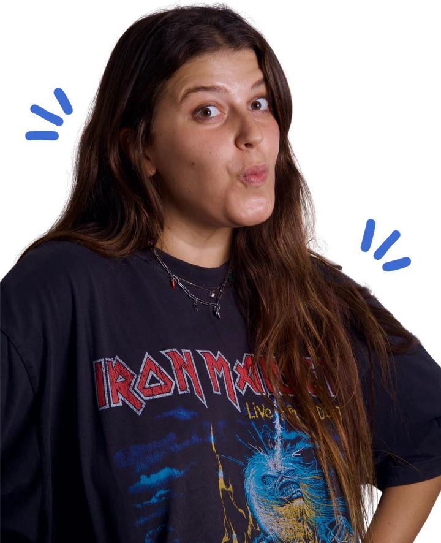

hi, it’s martina cola
- Italian
- Creative marketer
- Barcelona-based
welcome to my portfolio!!
( About )
I’m Martina, a creative marketing professional with experience in creative direction, social media, content & campaign management, influencer marketing, and paid media.

( Projects )
( Events )